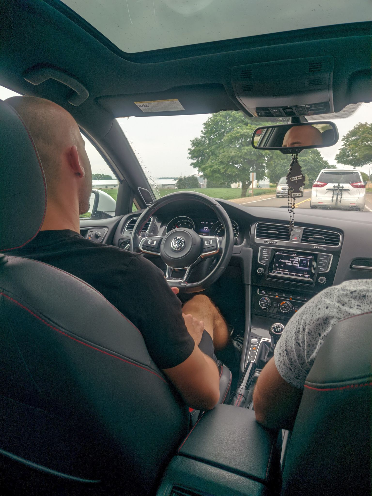

Vanjo Kolosnjaji

Summary
I am a self-taught full stack web developer, originally from Canada, and recently moved to Novi Sad. I am looking to find employment as a web developer.
Education
- The Complete Web Development Bootcamp 2023 (2023)
-
Elecrtical Technician - Industrial, 2-year College program at Conestoga College, Kitchener, Ontario, Canada.(2013-2015)The Complete Web Development Bootcamp 2023 (2023)
Skills
- Front-End Web Development
- HTML 5
- CSS 3
- Javascript ES6
- jQuery
- Node.JS
- Express.js
- MongoDB
- React.js
Work Experience
Electrical Panel Wireman - POSS Design Limited.
October 2022 - Present
- Wiring control panels and installing different electrical components
such as breakers, fuses, relays, VFD's and PLC's, just to name a few.
- Experience with high and low voltage wiring, as well as CAT5/6 cable.
- Able to perform point-to-point wiring based on electrical schematics
and diagrams.
Other